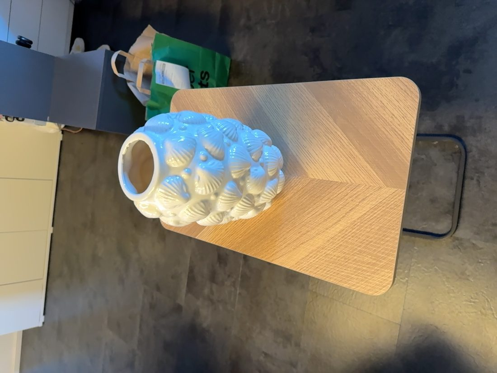
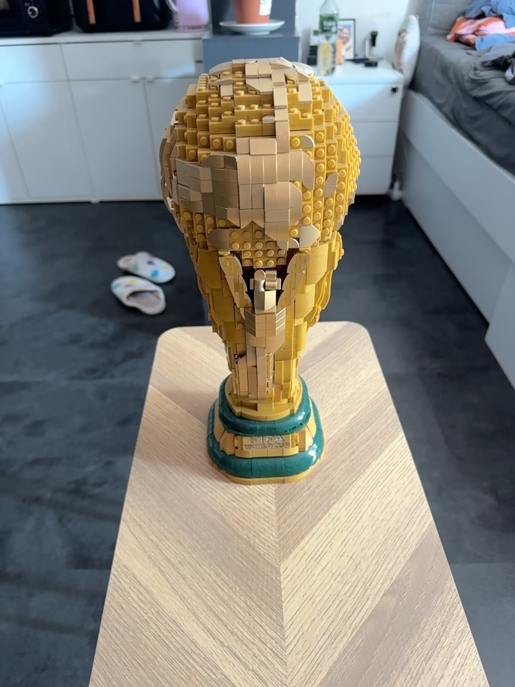
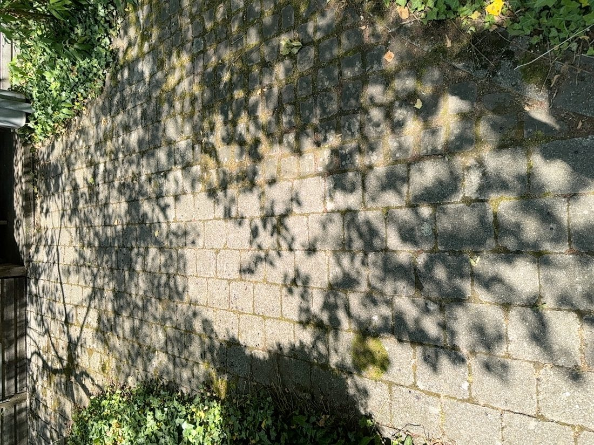
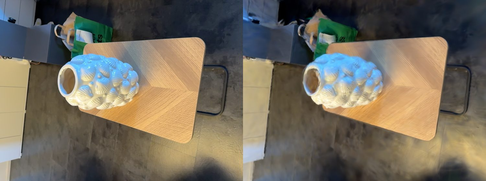
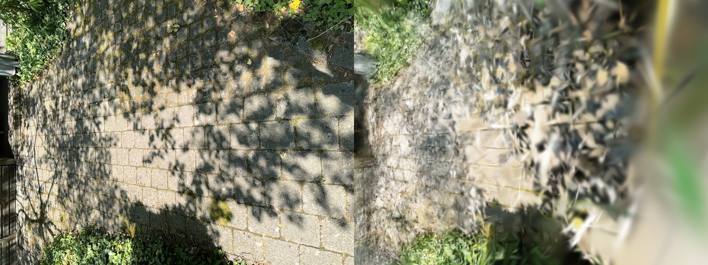
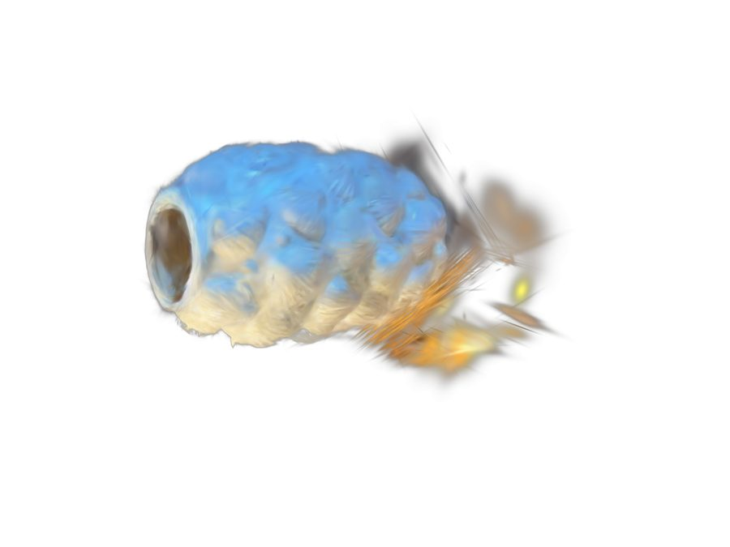

Capture & Pipeline
Von echten Fotos zum fertigen 3D-Modell
Wie wird aus ein paar Handy-Fotos ein begehbares 3D-Modell? Diese Seite zeigt die komplette Pipeline, die ich für unsere eigenen Szenen durchlaufen habe – von der Aufnahme über das Training bis zum Export ins web-taugliche .spz-Format. Alle Bilder und Modelle auf dieser Seite stammen aus selbst aufgenommenen Szenen (Vase, WM-Pokal, Wasserspray, Gartenhütte).
1. Aufnahme
Für das Capturing nehme ich mit der iOS-App Gaussian SplatKing Fotos aus vielen verschiedenen Perspektiven auf. Die App erfasst dabei zusätzlich Metadaten (Position, Bewegung, IMU/LiDAR) und exportiert alles gebündelt als .zip.
- LiDAR-Capture (iPhone Pro, empfohlen): liefert direkt ein fertiges COLMAP-Modell mit metrischen, schwerkraft-ausgerichteten Kameraposen und einer dichten Punktwolke. Bestes, stabilstes Ergebnis – das Modell steht im Viewer aufrecht.
- Foto-Capture (
photo_dual): nur Bilder, ohne Posen → die Posen müssen erst per Structure-from-Motion (Schritt 2) berechnet werden.



Aufnahme-Guidelines, die bei mir den größten Unterschied gemacht haben:
Goldene Regeln
- Scharf bleiben – langsam & ruhig, keine Bewegungsunschärfe
- 60–80 % Überlappung zwischen aufeinanderfolgenden Bildern
- Gleichmäßiges Licht, keine harten Wechsel, nichts Bewegtes im Bild
- Textur hilft – matte, strukturierte Oberflächen rekonstruieren besser als glänzende
🏺 Objekt vs. 🏠 Raum
- Objekt: mittig halten, 360° umrunden, 2–3 Ringe in verschiedenen Höhen, ~60–150 Bilder
- Raum: langsam abschreiten, alle Wände/Ecken abdecken, Schleifen schließen, 150–400+ Bilder
- Häufigster Fehler: zu wenig Überlappung → „Floater-Suppe” aus neuen Blickwinkeln
2. Vorverarbeitung – Structure from Motion
SplatKing exportiert Fotos und Metadaten, das Training braucht aber ein bestimmtes Format: COLMAP. Bei reinen Foto-Aufnahmen rechnet daher zuerst Structure-from-Motion (SfM) aus den überlappenden Bildern die Kameraposen und eine dünne 3D-Punktwolke – also wo jedes Foto aufgenommen wurde und wie die Szene grob im Raum liegt.
Bei LiDAR-Aufnahmen bringt SplatKing diese Posen + eine dichte Punktwolke schon mit – dann kann dieser Schritt übersprungen werden. (Details zu SfM/COLMAP: siehe Theorie & Methodik bzw. Gruppe 3.)
3. Training
Das eigentliche 3D Gaussian Splatting. Ziel: jeden COLMAP-Punkt zu einem 3D-Gaussian machen. Trainiert habe ich mit gsplat auf einer NVIDIA RTX 4070 Super. Der Ablauf pro Iteration:
Und so sieht diese Schleife live aus – aus einer festen Kameraperspektive, über den kompletten Trainingsverlauf. Links das echte Trainingsfoto (bleibt gleich), rechts der Render, der sich von einem verwaschenen Klecks zum scharfen Modell entwickelt:
Nach ~30.000 Iterationen passt das gerenderte Modell die Originalfotos sehr genau an. Der direkte Vergleich zeigt es – links das echte Foto, rechts das gerenderte 3DGS-Modell:


| Parameter | 🏺 Objekt | 🏠 Raum |
|---|---|---|
--strategy |
default (densifiziert frei) |
default |
--data-factor |
1 (volle Auflösung) |
2 (halbe – spart VRAM) |
--max-steps |
30.000 |
50.000 (größere, komplexere Szene) |
--sh-degree |
3 |
3 |
--app_opt |
– | ✓ |
Beide Szenentypen trainieren mit gsplats default-Strategie – eine mcmc-Strategie (gedeckelte Gaussian-Zahl) haben wir für Räume ausprobiert, sie führte bei uns aber zu Problemen und wurde wieder verworfen. Stattdessen bekommt der Raum mehr Trainingsschritte und --app_opt (Appearance Optimization): das gleicht Belichtungs-/Farbunterschiede zwischen den Aufnahmen aus, die bei 300+ Fotos eines Raums stärker ins Gewicht fallen als beim kurzen Objekt-Rundgang.
--sh-degree (Spherical-Harmonics-Grad) legt fest, wie viele Kugelflächenfunktions- Koeffizienten pro Gaussian für blickwinkelabhängige Farbe (z. B. Glanzlichter, Reflexionen) genutzt werden: 0 = nur eine feste Grundfarbe, höhere Grade erlauben zunehmend richtungsabhängige Farbvariation, kosten aber mehr Speicher pro Gaussian. 3 ist gsplats Maximum und für beide Szenentypen sinnvoll.
4. Export
Nach dem Training werden die Gaussians im PLY-Format gespeichert – ein 3D-Dateiformat zur Beschreibung einer Liste von Elementen (hier: alle Gaussians einer Szene). Der Header gibt Anzahl und Eigenschaften vor, danach folgen pro Gaussian die jeweiligen Werte.
Für webbasierte Anwendungen konvertiere ich die .ply anschließend zu .spz – das ist effizienter und komprimierter (~10×) bei praktisch identischer Qualität und liegt bereits im RUB-Koordinatensystem von three.js / Babylon.js. Optional lassen sich Streu-Gaussians vorher in SuperSplat entfernen oder das Objekt freistellen:
ply
format binary_little_endian 1.0
element vertex 877358 ← Anzahl Gaussians
property float x ← Position
property float y
property float z
property float opacity ← Opazität (Alpha)
property float scale_0 ← Form / Kovarianz
property float rot_0 ← Rotation (Quaternion)
property float f_dc_0 ← Farbe (Spherical Harmonics)
...
end_header
<binäre Werte pro Gaussian>
.ply → .spz: ~10× kleiner, ready für Babylon.js & WebXR.
5. Modell-Galerie
Vier selbst trainierte Szenen – die Videos zeigen eine automatische Kamerafahrt um das fertige Modell:
Eigenes Modell – live & interaktiv
Hier eingebettet: mein trainiertes Vase-Modell als echtes, drehbares 3DGS direkt im Browser (per Maus/Touch rotieren & zoomen). Alle vier Modelle – inklusive Datei-Upload und einem First-Person-Viewer zum Begehen der Szenen – gibt es auf der Seite Web & AR.
Alle Modelle interaktiv erkunden & begehen →
Quellen
- 3D Gaussian Splatting for Real-Time Radiance Field Rendering (SIGGRAPH 2023) — die zugrundeliegende Methode (siehe auch Theorie & Methodik)
- gsplat (nerfstudio-project) — die Trainingsbibliothek, mit der alle Modelle auf dieser Seite trainiert wurden
- COLMAP — Structure-from-Motion/Multi-View-Stereo, rechnet die Kameraposen für Foto-Aufnahmen ohne LiDAR
- Gaussian SplatKing (iOS-App) — Aufnahme-App für Fotos + LiDAR-Metadaten
- SuperSplat — browserbasiertes Tool zum Freistellen/Bereinigen der trainierten Splats
- spz-Format (Niantic Labs) — komprimiertes Export-Format für den Web-Viewer